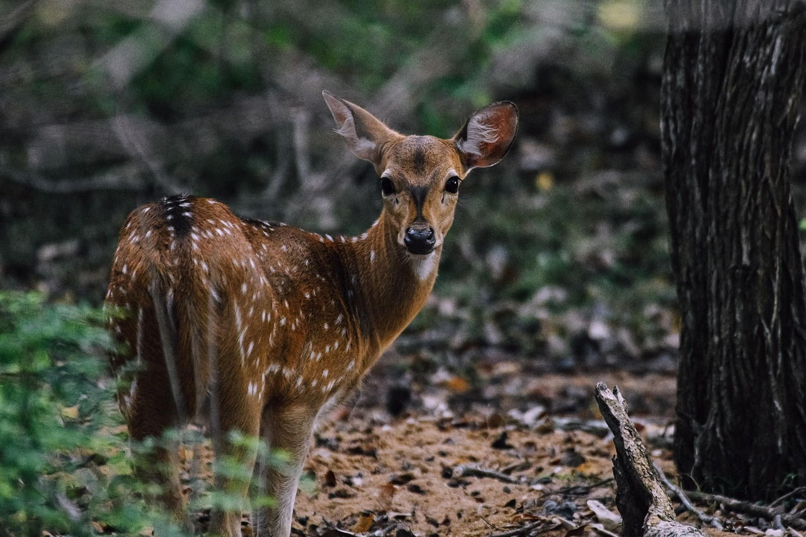
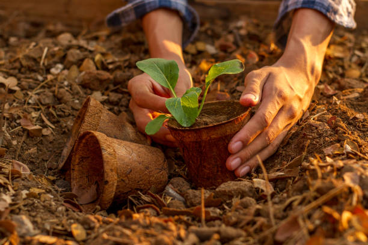
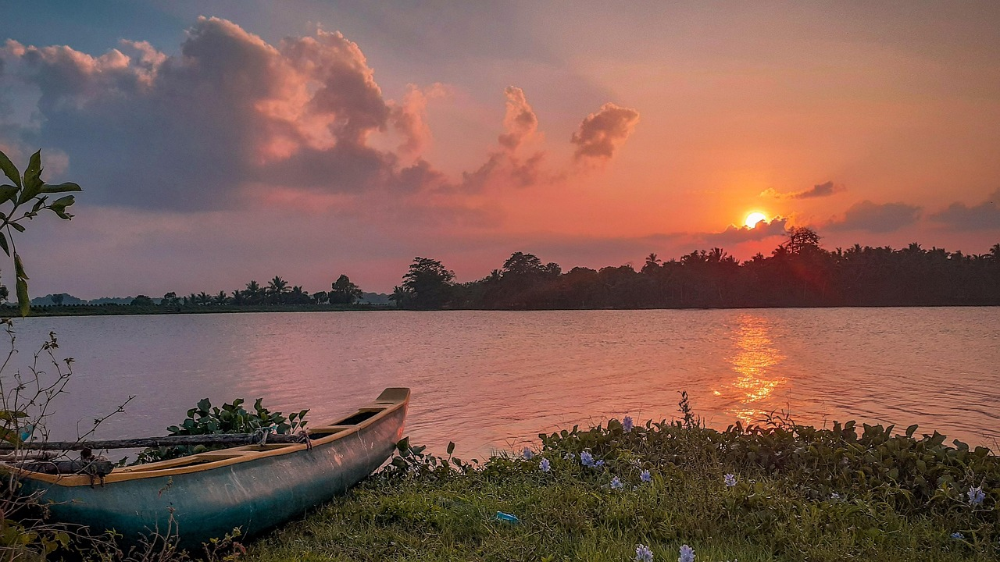
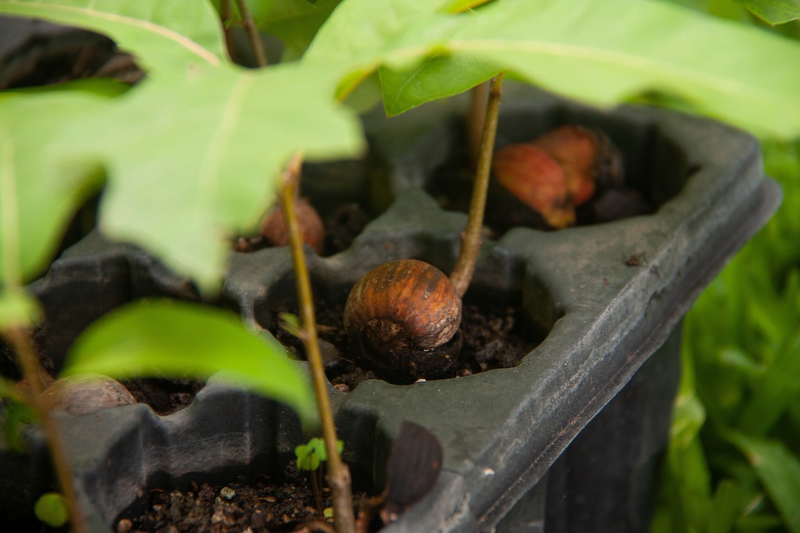

Reforestation
Protecting Nature, One Tree at a Time
Welcome to our Reforestation Hub! Sri Lanka’s forests are vital for our planet’s health, local communities, and wildlife. Explore how reforestation is making an impact—and how you can be part of this green revolution.
Protected Forest Areas
Sri Lanka boasts a rich network of protected areas, home to rare wildlife, ancient rainforests, and breathtaking biodiversity. These lands are crucial in the fight against deforestation and climate change.
- Sinharaja Forest Reserve - A UNESCO World Heritage Site, home to many endemic species.
- Wilpattu National Park - The largest national park in Sri Lanka, known for its leopards.
- Yala National Park - Famous for its diverse wildlife, including elephants and birds.

Reforestation Projects Reviving Sri Lanka’s Forests
Across Sri Lanka, inspiring reforestation initiatives are breathing life back into degraded lands and forests lost to agriculture, logging, and development.
- Government programs like Haritha Lanka and Api Wawamu - Rata Nagamu are restoring green cover nationwide.
- NGOs such as Reforest Sri Lanka and Rainforest Rescue International are planting millions of native trees.
- Innovative projects using drones, seed bombs, and community nurseries are transforming barren landscapes.

Volunteer Reforestation
Roll up your sleeves! Sri Lanka’s volunteer reforestation programs are perfect for anyone passionate about the environment. Whether you’re a local resident or an eco-tourist, there are countless ways to get involved.
- Join weekend tree planting drives in Colombo, Kandy, or Anuradhapura
- Participate in eco-camps and restoration projects in rural communities.
- Collaborate with groups like Thuru, Earth Volunteers, and Zero Plastic Movement that combine tree planting with environmental education.

Why Reforestation Is Crucial
Reforestation isn’t just about planting trees. It’s about healing ecosystems, protecting communities, and ensuring a greener tomorrow.
- Forests act as carbon sinks, reducing the effects of global warming.
- They provide clean air and water, essential for human health and agriculture.
- Trees help prevent landslides and floods, which are becoming more frequent due to climate change.
